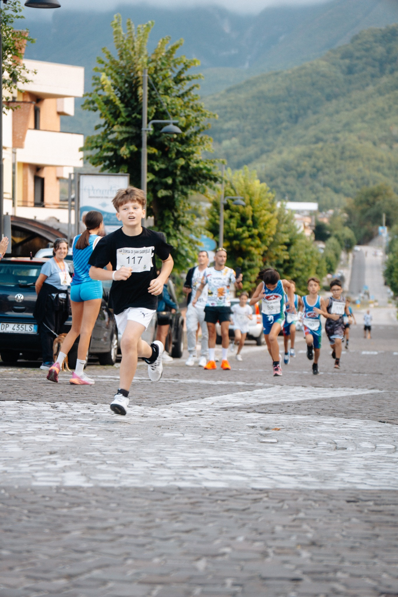
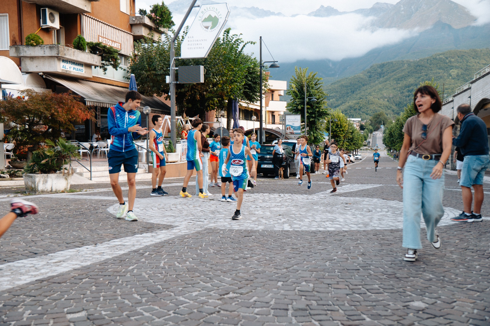
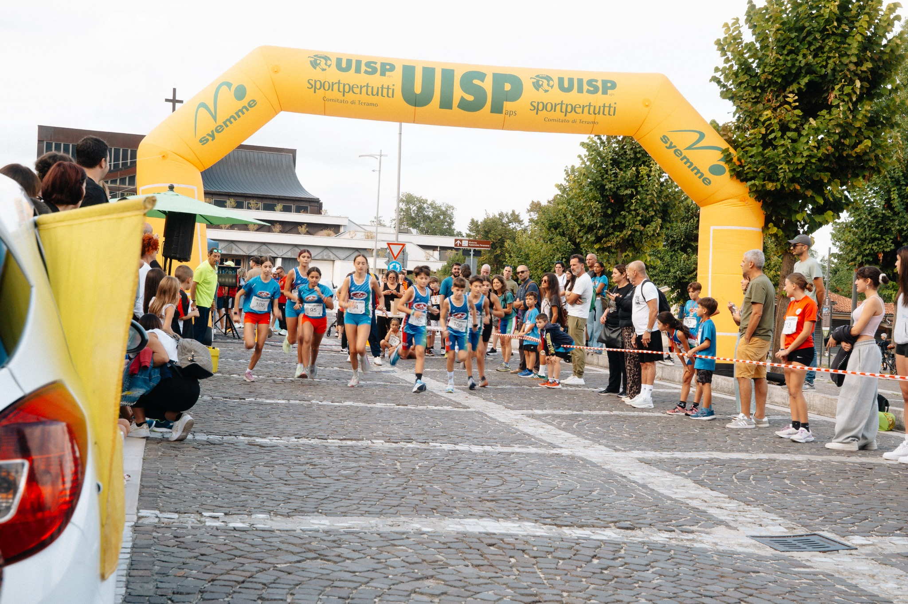
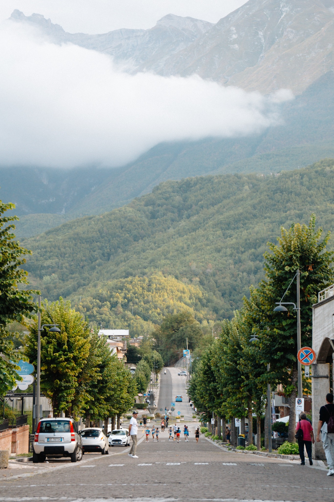
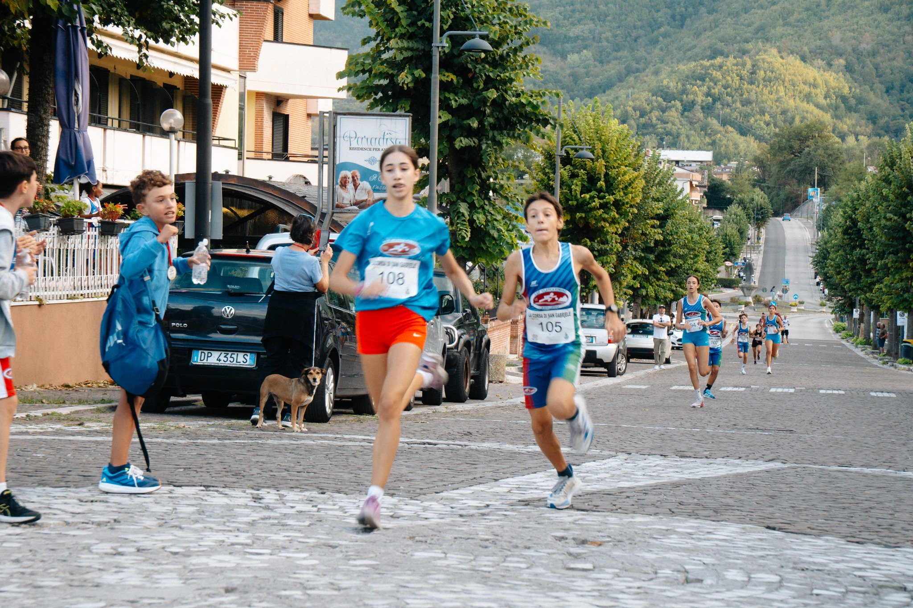
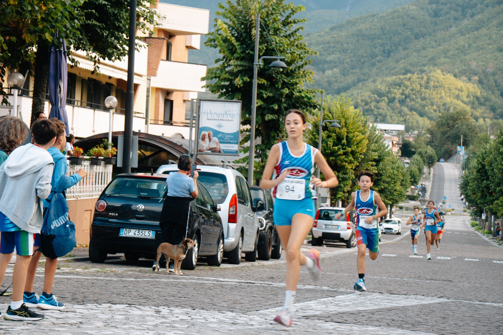
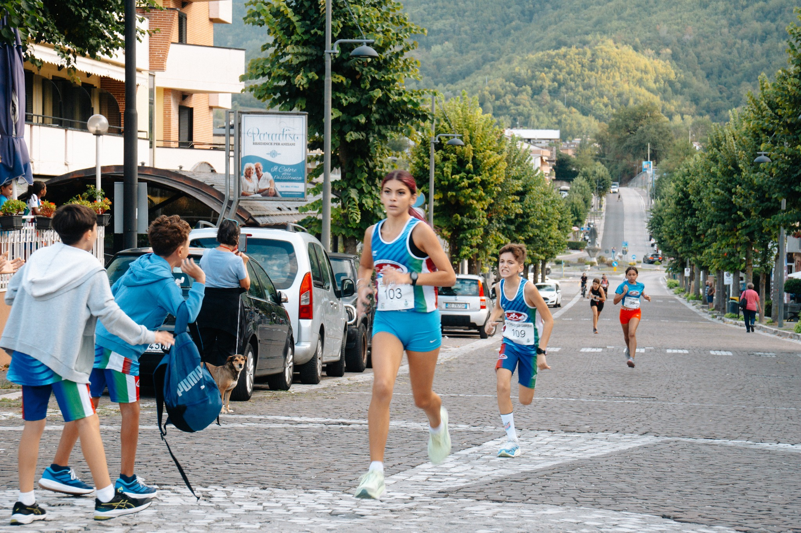
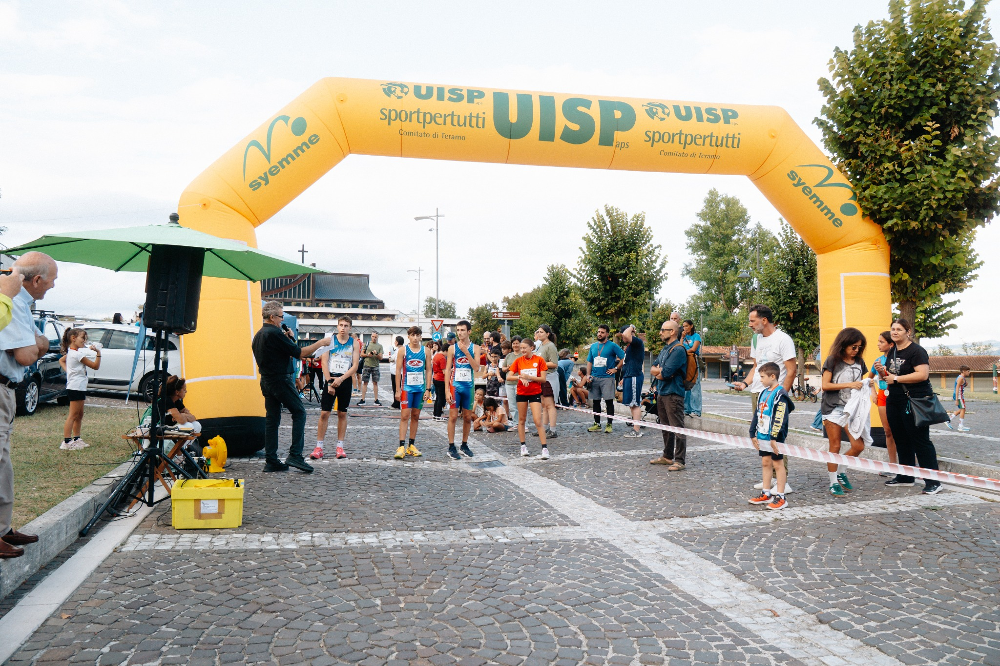
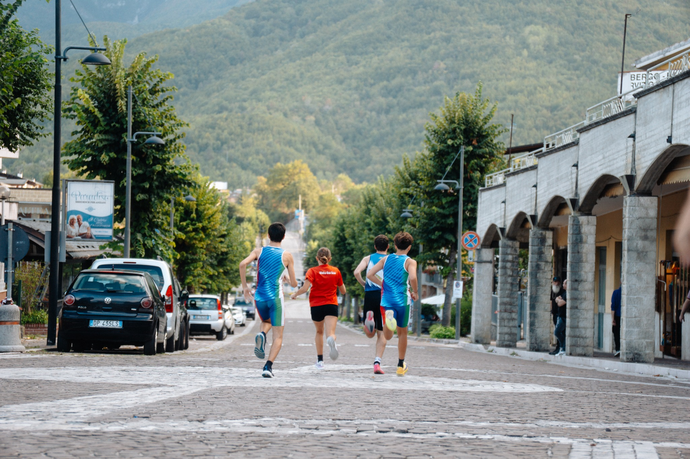
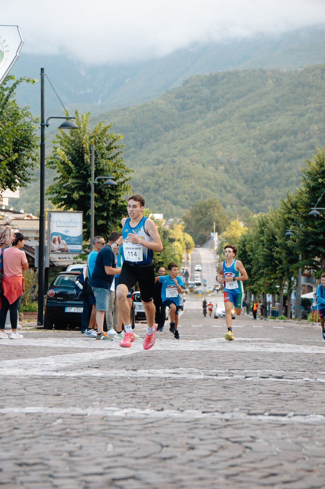

.png)
 CORSA DI SAN GABRIELE
CORSA DI SAN GABRIELECorsa di San Gabriele
La manifestazione podistica della Polisportiva, ai piedi del Gran Sasso. Le informazioni sulle prossime edizioni saranno comunicate qui.
Informazioni ↗La manifestazione podistica della Polisportiva ai piedi del Gran Sasso.
CORSA DI SAN GABRIELELa manifestazione podistica della Polisportiva, ai piedi del Gran Sasso. Le informazioni sulle prossime edizioni saranno comunicate qui.
Informazioni ↗Tre giri tra le strade di Isola del Gran Sasso. Un circuito cittadino che porta la corsa nel cuore del paese, con il traguardo in prossimità del Santuario di San Gabriele.
Il tracciato rosso riproduce la mappa fornita dall'organizzazione. Il punto del traguardo è indicato separatamente: il collegamento stradale finale verso il Santuario non è ancora rappresentato. Le distanze di 3,3 km e 9,9 km sono quelle dichiarate dall'organizzazione.
Visualizza il traguardo su Google Maps ↗Dieci fotografie della Corsa di San Gabriele. Scorri la galleria e tocca uno scatto per vederlo a dimensione intera.









